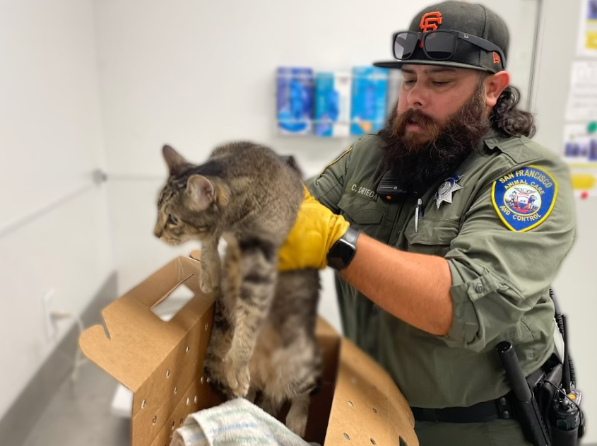

Decides que Mike correrá hacia el hombre.
Mike rápidamente toma acción y corre tan rápido como puede en su dirección. El hombre se da cuenta de lo que está ocurriendo y se da la vuelta para enfrentar a los gatos.
Al darse la vuelta, los gatos se detienen y salen corriendo en dirección opuesta, lo que confundió a Mike.
El hombre, revelando su uniforme de Control Animal, piensa que Mike es un gato salvaje que lo quiere atacar, por lo que le lanza un tranquilizante. Esto noquea a Mike.
El hombre va y recoge a Mike, metiéndolo en su camioneta para llevarlo a un centro de control animal.
Varias horas después, Mike despierta en una jaula en un lugar desconocido, rodeado de animales salvajes enjaulados, y sin saber qué tan lejos está de su colonia.
Fin.